ieee_paper.pdf. LaTeX: ieee_paper.tex (journal class).
Dashboard: https://fl-research.vercel.app
Abstract— Federated learning (FL) enables multiple institutions to jointly train machine learning models without exchanging raw data, a property that is especially desirable for network security analytics where flow telemetry may contain sensitive operational information. This paper presents a comprehensive theoretical and empirical study of Federated Averaging (FedAvg) applied to multi-class intrusion / traffic classification on the CIC–UNSW-NB15 augmented dataset. We formalize the FL objective, the FedAvg update rule, local empirical risk minimization with multilayer perceptrons (MLPs), and a single-client label-poisoning threat model. We then conduct a 64-configuration experimental sweep over client counts, global communication rounds, local epochs, and poison intensities. Empirically, longer training improves clean accuracy (best clean accuracy ≈ 0.924), while targeted poisoning is most harmful when a single client dominates training (worst accuracy ≈ 0.856). With multiple clients, FedAvg dilutes one poisoned shard and accuracy typically remains above 0.90. Confusion-matrix and one-vs-rest TP/FP/FN/TN analyses show that majority-class targeted poisoning systematically increases false positives for class 0 and reduces recall for several minority attack categories—an effect that can be understated by overall accuracy alone under severe class imbalance. We discuss communication cost, convergence intuition under IID shards, limitations of the simulation setting, and directions for robust aggregation.
Keywords— Federated learning, Federated Averaging (FedAvg), intrusion detection systems, network traffic classification, data poisoning, label flipping, CIC–UNSW-NB15, multilayer perceptron, confusion matrix, class imbalance
Network intrusion detection and traffic classification increasingly rely on supervised learning over high-dimensional flow features. In operational settings, however, the organizations that collect such telemetry—enterprises, internet service providers, campus networks, or industrial control environments—are often unwilling or legally unable to centralize raw records. Privacy regulations, competitive sensitivity, and breach-risk all discourage naive data pooling.
Federated learning offers an alternative: each participant trains on local data and shares only model parameters (or gradients), which a coordinating server aggregates into a global model. For intrusion detection, this paradigm suggests a path toward collaborative detection quality without collaborative data warehouses.
We study the following concrete problem. Given a tabular multi-class dataset with feature vectors x ∈ ℝd and labels y ∈ {0,…,C−1}, simulate N clients holding disjoint training shards and learn a shared classifier fθ via FedAvg. We then ask:
All experiments in this repository run on a single machine. “Clients” are logical partitions of a shuffled training set rather than physically distributed hosts. The simulation preserves the algorithmic structure of FL (local optimization + server aggregation) while abstracting away network latency, dropouts, and systems engineering. This is appropriate for controlled scientific comparison of learning dynamics and poisoning effects, but it is not a full systems deployment study.
Section II reviews FL, IDS learning, and poisoning. Section III develops the mathematical framework. Section IV describes the system design. Section V details the experimental protocol. Sections VI–VII present and interpret results. Section VIII concludes.
Classical machine learning for IDS ranges from shallow models (decision trees, SVMs, random forests) to deep neural networks trained on packet or flow features. Centralized training assumes a single data lake. While often accurate in benchmarks, this assumption conflicts with multi-organization collaboration. Moreover, network data are characteristically imbalanced: benign or majority classes dominate, so accuracy can be misleading unless accompanied by per-class analysis. Cost-sensitive learning, resampling, and anomaly-detection formulations are common responses; in this work we retain a standard multi-class MLP and instead emphasize diagnostic metrics.
In cross-silo or cross-device FL, a server coordinates rounds of local training and aggregation. FedAvg is the canonical algorithm: clients run multiple local SGD/Adam steps and return updated weights; the server averages them, typically weighted by local dataset sizes. The literature has since developed methods for statistical heterogeneity (FedProx, SCAFFOLD), communication compression, personalization, secure aggregation, and robust aggregation against Byzantine clients. Understanding vanilla FedAvg remains foundational because it is still the default baseline in many applied FL systems.
A central systems insight of FedAvg is that increasing local computation (more local epochs) can reduce the number of communication rounds needed to reach a target accuracy when client data are not too heterogeneous. That trade-off is directly relevant to IDS collaborations spanning administrative domains with limited bandwidth or intermittent connectivity.
Prior work has explored FL for IoT and network intrusion detection to keep telemetry local while improving collective detectors. Our contribution is not a new FL optimizer; rather, we provide a carefully instrumented FedAvg case study with poisoning analysis and confusion-level diagnostics on a widely used tabular intrusion dataset, accompanied by public artifacts.
Data poisoning injects corrupted training examples to degrade or redirect a learned model. In FL, a malicious client can poison labels or features, or upload crafted weights (model poisoning / backdoor insertion). Defenses include robust aggregators (coordinate-wise median, trimmed mean, Krum), anomaly detection on updates, and differential privacy. This paper evaluates undefended FedAvg against a simple but realistic label-flipping adversary on one client, establishing an empirical baseline for how much “natural dilution” multi-client averaging provides before specialized defenses are added.
UNSW-NB15 and related CIC-augmented releases provide labeled flow features covering multiple attack categories alongside normal traffic. We use an augmented CIC–UNSW-NB15 tabular release with d = 76 numeric features and C = 10 classes. Exact semantic names of minority classes are less critical for our algorithmic conclusions than the empirical imbalance pattern: one dominant class and several rare classes with near-zero recall under a simple MLP. This imbalance is typical of security telemetry and motivates confusion-matrix reporting.
Let 𝒟 be a distribution over 𝒳 × 𝒴 with 𝒴 = {0,…,C−1}. A parametric model fθ: 𝒳 → ℝC produces logits; the predicted label is ŷ = arg maxc [fθ(x)]c. The population risk under cross-entropy is
R(θ) = 𝔼(x,y)∼𝒟 [ ℓ(fθ(x), y) ] (1)
where ℓ(z, y) = − log ( ezy / Σc ezc ). Given a finite training set S = {(xi, yi)}i=1n, the empirical risk is
R̂S(θ) = (1/n) Σi=1n ℓ(fθ(xi), yi). (2)
Partition S into N disjoint client datasets Sk with nk = |Sk| and Σk nk = n. The global empirical risk decomposes exactly as a mixture of local empirical risks:
R̂S(θ) = Σk=1N (nk/n) R̂Sk(θ). (3)
Equation (3) is the conceptual justification for size-weighted FedAvg: averaging models trained on local risks approximates minimizing a weighted combination of those risks when local updates remain sufficiently close to the broadcast initialization (limited client drift).
In round t, client k receives θt and approximately solves
θkt+1 ≈ arg minθ R̂Sk(θ) initialized at θt, (4)
using E epochs of minibatch Adam with learning rate η. Let B be the minibatch size. The number of local gradient steps per round is roughly E · ⌈nk/B⌉. More local steps increase client drift away from θt but also increase local progress per communication round—the classic FedAvg trade-off between computation and communication.
Adam maintains first and second moment estimates of gradients, which often stabilizes training on noisy tabular minibatches compared with vanilla SGD. In our implementation, the Adam optimizer state is re-initialized each round from the broadcast weights (a common FedAvg practice), so momentum does not persist across rounds.
The server sets
θt+1 = Σk=1N wk θkt+1, wk = nk / Σj nj. (5)
If shards are equal-sized, wk = 1/N. Aggregation is performed element-wise over all tensors in the state dictionary (weights and biases of every layer). Because every client shares the same architecture, corresponding parameters are aligned and averaging is well-defined.
Let |θ| denote the number of scalar parameters. Each round transmits approximately N|θ| parameters uplink and N|θ| downlink (broadcast counted per client), i.e., Θ(N|θ|) communication per round. Total communication over R rounds scales as Θ(R N |θ|). Increasing E can reduce the R required for a target accuracy in many IID settings, improving communication efficiency—one of FedAvg’s original motivations.
For our MLP with input 76, two hidden layers of width 128, and 10 outputs, the parameter count is on the order of tens of thousands of scalars—small by modern deep-learning standards, which makes repeated full-model exchanges inexpensive in simulation and plausible even for constrained cross-silo links.
Our model is a two-hidden-layer MLP:
fθ(x) = W3 σ(W2 σ(W1x + b1) + b2) + b3, (6)
with σ = ReLU, hidden width 128, d = 76, and C = 10. Softmax is implicit in the cross-entropy loss. ReLU networks can approximate a wide family of piecewise-linear decision regions; in practice, capacity interacts with class imbalance, often favoring majority-class decision rules unless rare classes are sufficiently represented or reweighted.
Let n(c) be the number of test examples of class c. Overall accuracy is
Acc = (1/ntest) Σi 1[ŷi = yi]. (7)
Under imbalance, Acc is dominated by majority-class correctness. We therefore also report precision, recall, F1, the full confusion matrix M ∈ ℕC×C with Mij = #{i′ : yi′=i, ŷi′=j}, and one-vs-rest counts:
TPc=Mcc, FPc=Σi≠c Mic, FNc=Σj≠c Mcj, TNc=ntest−TPc−FPc−FNc. (8)
Per-class recall TPc/(TPc+FNc) is especially informative for rare attacks. High TNc values are expected in multi-class settings because most examples are not of class c; thus TP/FP/FN trends are usually more actionable than TN magnitude alone.
We consider a dirty-label adversary controlling client 0 only. Features remain untouched; a fraction f ∈ [0,1] of local labels are replaced according to a mode m:
The adversary does not modify uploaded weights beyond ordinary training on poisoned labels, and does not control the test distribution. This models a compromised or negligent data pipeline at one silo rather than an optimal model-replacement attack. Formally, if P0 is the poisoned local training distribution for client 0, local ERM targets R̂ under P0 rather than the clean S0, biasing θ0 and, through (5), the global model.
Suppose equal shard sizes and one poisoned client. Even if θ0t+1 is strongly biased, the aggregate is
θt+1 = (1/N) θ0t+1 + (1/N) Σk=1N−1 θkt+1. (9)
As N grows, the poisoned update’s coefficient 1/N shrinks. This is not a cryptographic defense and fails if many clients collude or if the adversary mounts stronger model poisoning; but it explains our empirical observation that multi-client runs remain near clean accuracy under single-client label flips. Conversely, when N = 1, equation (9) collapses to θt+1 = θ0t+1, so poisoning transfers undiluted.
When shards are IID draws from the same distribution, local risks R̂Sk are statistically similar. Local Adam steps from a shared initialization tend to move in related directions, so averaging is constructive. Formal FedAvg analyses typically assume smoothness/Lipschitz gradients, bounded stochastic gradient variance, and control of client drift as a function of E and heterogeneity. Our shards are IID-like by construction (random shuffle then cut), placing us near the favorable regime. Non-IID partitions would increase drift and could amplify poisoning or reduce clean accuracy; we leave that to future work.
An intuitive view is that FedAvg performs a form of inexact alternating minimization on the mixture objective (3): each client descends on its term, then the server projects back to a consensus model by averaging. With small E and IID data, the inexactness is mild; with large E or heterogeneous data, consensus quality degrades without algorithmic corrections (e.g., proximal terms).
Targeting the majority class is a strategically strong dirty-label choice under imbalance. Flipping labels to class 0 increases the empirical prior toward 0 inside the poisoned shard. The resulting local optimum tends to expand the region of feature space assigned to class 0. After aggregation, especially at N = 1, test points from neighboring classes are more often absorbed into class 0 predictions. Random-wrong flips, by contrast, inject less coherent bias and often degrade performance less at equal f in our sweep.
Figure 1 summarizes preprocessing. Features and labels are aligned row-wise from Dataset.csv and Label.csv. Non-finite values are replaced by zeros. A stratified split (default 80% train / 20% test) preserves class proportions. A StandardScaler is fit on training features only, then applied to train and test. Training indices are shuffled with a fixed seed and split into N approximately equal shards.
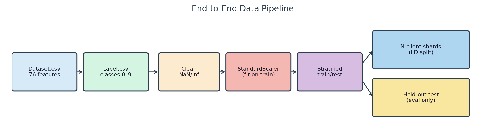
Note on global scaling. Fitting a scaler on pooled training features is a practical simplification for a single-machine simulation. Strictly decentralized FL might estimate normalization statistics via secure aggregation or use per-client normalization. We explicitly document this assumption because it slightly weakens the “no shared raw data” story for preprocessing, though no labels or raw rows are exchanged during federated training itself.
Figure 2 shows the shared MLP. Identical architecture across clients is mandatory for element-wise FedAvg. The network is intentionally compact to enable a large configuration sweep on CPU.
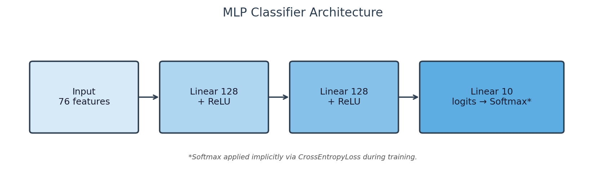
Figure 3 and Algorithm 1 describe one round of training. In code, each client deep-copies the global state dictionary, trains with Adam and cross-entropy, then returns parameters and sample counts for weighted averaging.
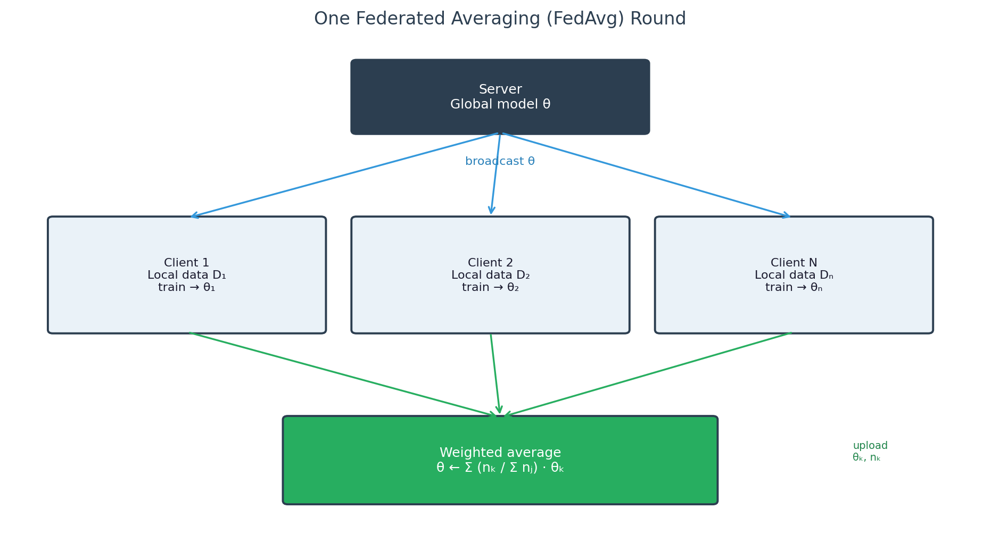
Before local training begins, if poisoning is enabled, client 0’s label vector is rewritten according to Section III-H (Figure 4). Features and all other clients remain clean. The test set is never poisoned.
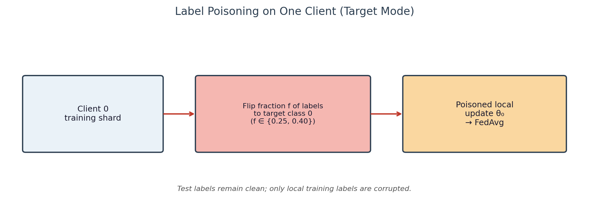
The implementation uses PyTorch for the MLP and optimization; pandas/NumPy for I/O; and scikit-learn for splitting, scaling, confusion matrices, and classification reports. A configuration dataclass exposes clients, rounds, local epochs, batch size, learning rate, device, and poison parameters via CLI flags, enabling reproducible sweeps and scripted visualization.
Runs use CPU by default with fixed random seeds for NumPy and PyTorch. This favors reproducibility over wall-clock speed and avoids GPU nondeterminism as a confounder when comparing many nearby configurations.
The principal sweep comprises 64 configurations exploring N ∈ {1,2,3,5}; global rounds (notably 5 and 10); local epochs E ∈ {1,2}; poison fraction f ∈ {0, 0.25, 0.40}; and poison mode ∈ {target, random_wrong} when f > 0. Primary metrics are test accuracy, precision, recall, and F1. Selected representative scenarios additionally store full confusion matrices and TP/FP/FN/TN vectors.
Across all 64 runs, accuracy has mean ≈ 0.907, standard deviation ≈ 0.014, minimum ≈ 0.856, and maximum ≈ 0.924. The relatively small standard deviation indicates that most configurations remain in a high-accuracy band; the lower tail is concentrated in heavily poisoned single-client settings. Mean F1 is ≈ 0.901 with a slightly larger spread, consistent with minority-class sensitivity.
The test set is never poisoned and never used for training. After the final round we compute aggregate metrics and, for key scenarios, confusion matrices. Interactive HTML dashboards summarize charts and matrices for exploration beyond static figures.
Results are exported to CSV; static PNG figures and dashboards accompany the repository. Live dashboard: https://fl-research.vercel.app.
Under clean labels, increasing R and E generally improves accuracy. Single-client clean training can slightly outperform multi-client FedAvg at the same budget because there is no averaging-induced damping; however, multi-client accuracy remains strong (typically > 0.90). Figures 5 and 6 illustrate round and local-epoch effects on clean runs.
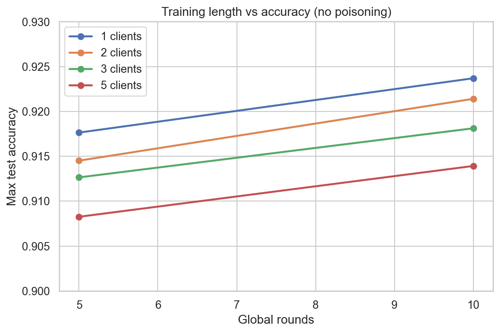
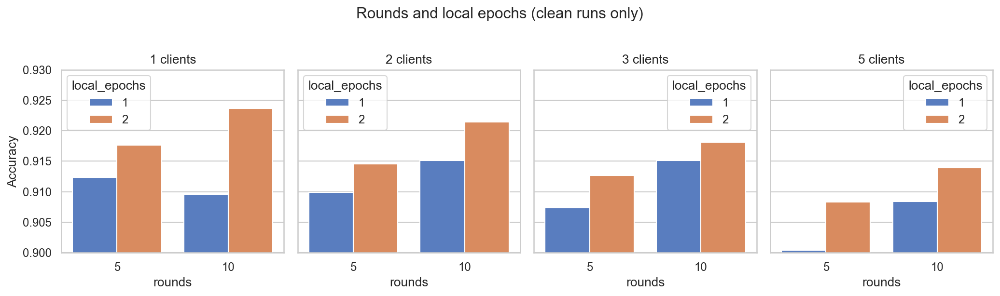
Figure 7 compares best accuracy by client count and scenario. Figure 8 shows a clients-versus-poison heatmap of maximum accuracy. Figure 9 contrasts clean versus 40% target poisoning. Visually, the poison penalty is concentrated at N = 1 and nearly disappears at N = 5.
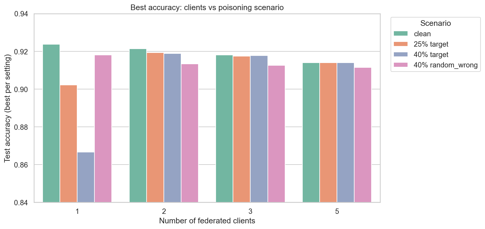
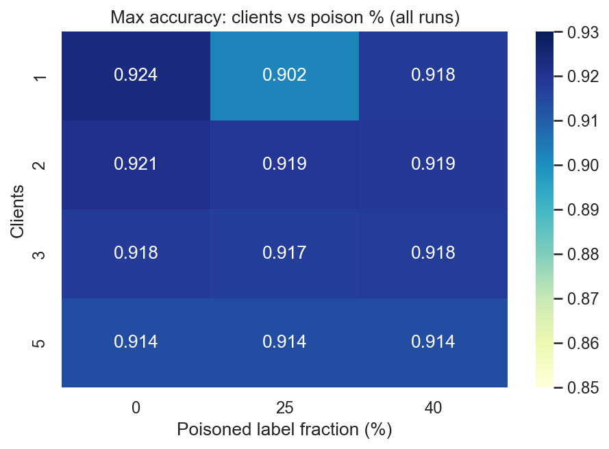
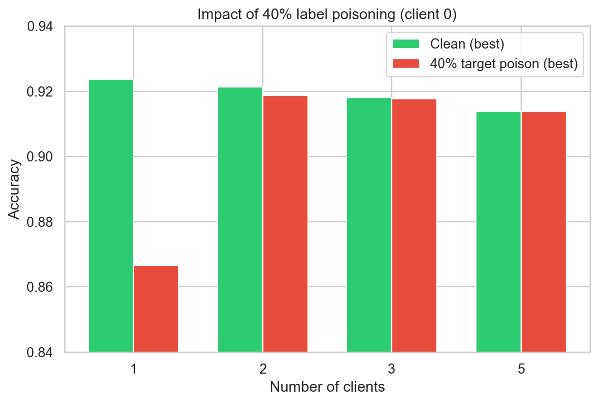
Table I lists best observed metrics by condition. The most damaging cell is N = 1 with 40% target poison (accuracy ≈ 0.867 in the best-of-condition table; some individual runs fall near 0.856). By contrast, N = 5 with 40% target poison remains essentially tied with the clean five-client best (≈ 0.914).
| Clients | Poison | Mode | Acc. | F1 |
|---|---|---|---|---|
| 1 | 0% | — | 0.9237 | 0.9212 |
| 1 | 25% | target | 0.9022 | 0.8881 |
| 1 | 40% | target | 0.8666 | 0.8329 |
| 1 | 40% | random | 0.9180 | 0.9127 |
| 2 | 0% | — | 0.9214 | 0.9177 |
| 2 | 40% | target | 0.9188 | 0.9132 |
| 3 | 0% | — | 0.9181 | 0.9152 |
| 3 | 40% | target | 0.9178 | 0.9135 |
| 5 | 0% | — | 0.9139 | 0.9119 |
| 5 | 40% | target | 0.9139 | 0.9117 |
Table II reports mean accuracy aggregated over rounds/epochs/modes in the sweep. The drop from f = 0 to f = 0.4 is large for N = 1 (≈ 0.916 → 0.887 mean) and small for N = 5 (≈ 0.908 → 0.905). Intermediate N values interpolate smoothly, supporting the 1/N dilution intuition of Section III-I.
| Clients | f = 0 | f = 0.25 | f = 0.40 |
|---|---|---|---|
| 1 | 0.9158 | 0.8981 | 0.8873 |
| 2 | 0.9152 | 0.9141 | 0.9106 |
| 3 | 0.9133 | 0.9127 | 0.9082 |
| 5 | 0.9077 | 0.9076 | 0.9051 |
Target poisoning toward class 0 is typically more harmful than random-wrong poisoning at the same fraction in low-N regimes. Random-wrong noise is less coherently biased; target poisoning consistently teaches a majority-class prior. This distinction appears both in aggregate metrics (Table I) and in confusion structure (Section VI-G).
Figures 10–11 show five-client clean versus poisoned matrices. They are nearly alike: FedAvg dilution keeps decision boundaries stable. Class 0 dominates correct predictions; rare classes remain difficult; class 5 absorbs many off-diagonal errors even in clean training, indicating a structural confusion pattern of the representation/model rather than an artifact of poisoning alone.
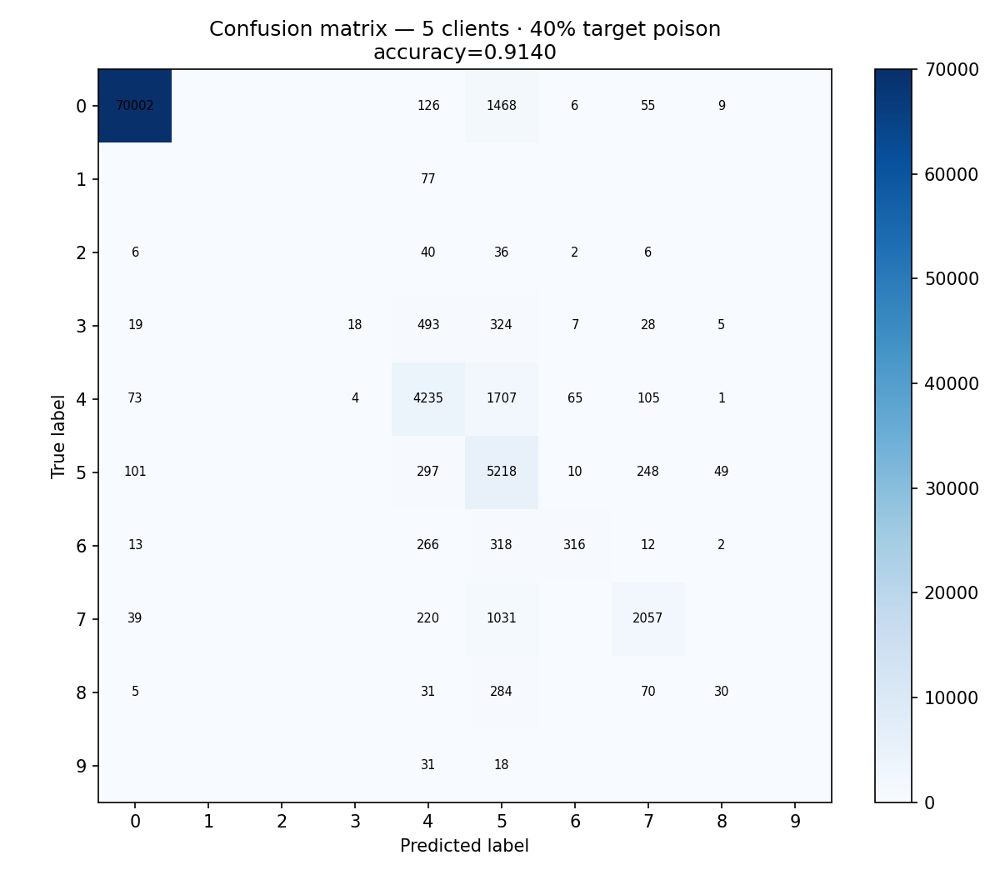
Figures 12–13 show the single-client contrast. After 40% target poisoning, substantial mass moves into predicted class 0 from true classes 4, 5, 6, and 7. Class 0 recall can remain high or even increase, while other classes suffer. Figures 14–15 make the same point via TP/FP/FN/TN bars: class 0 FP rises; FN rises for several non-zero classes. This is the empirical signature of majority-class targeted label noise under undiluted training.
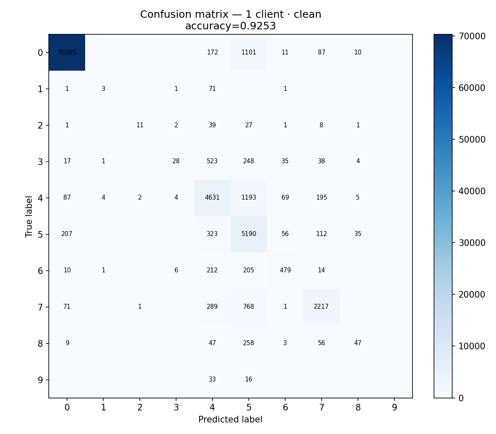
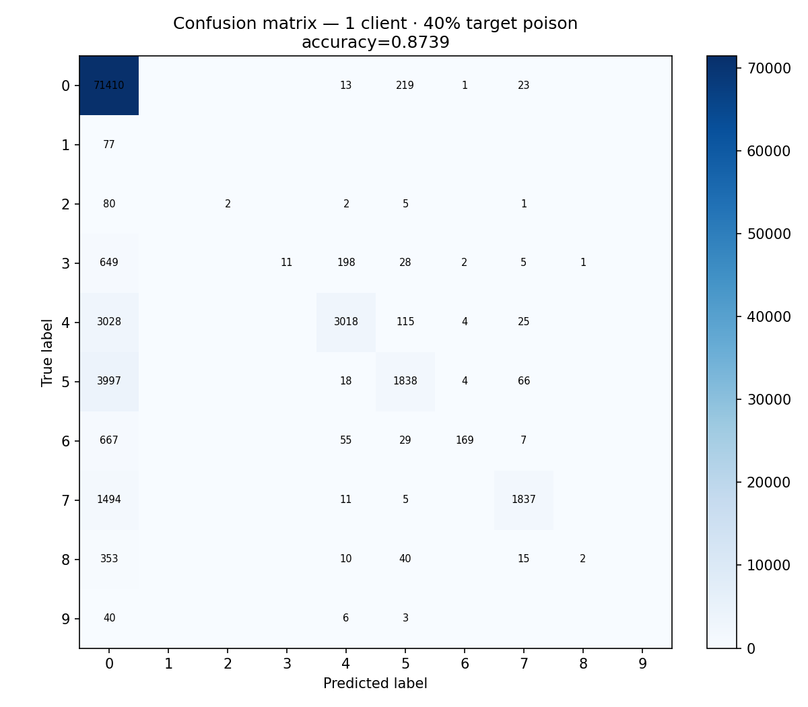
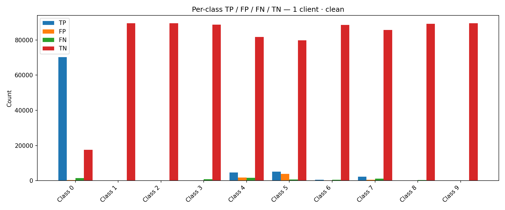
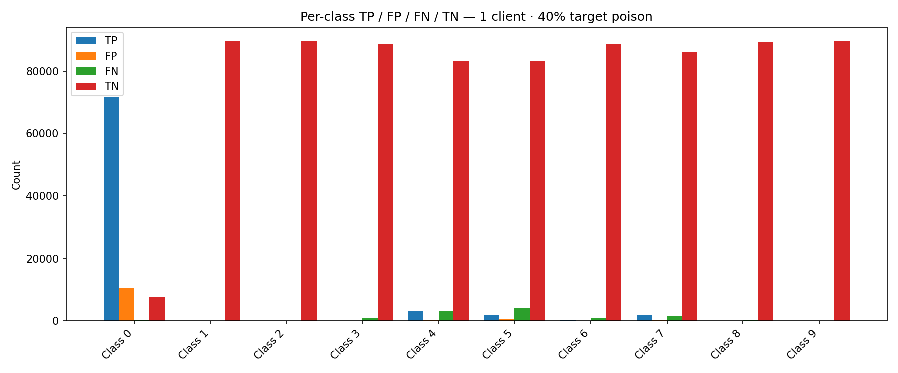
From a SOC analyst’s perspective, elevated class 0 false positives after target poisoning mean attack flows are more often declared “majority/benign-like” (depending on label semantics), i.e., missed detections. Overall accuracy may still look acceptable because class 0 is frequent. This is why confusion-level reporting is mandatory for security ML evaluations and why Table I’s accuracy gaps understate operational harm at N = 1.
Byzantine-robust aggregators were designed for stronger adversaries than our label-flip setting. Our results suggest that for a single weakly malicious client under IID equal shards, classical FedAvg already limits damage. That should not be read as a substitute for robust aggregation when clients can send arbitrary updates, when many clients are malicious, or when data are highly non-IID. Instead, dilution is a baseline phenomenon on top of which stronger defenses can be layered.
We do not claim FedAvg is secure against adaptive model-poisoning or colluding clients. We do not claim MLP is the optimal IDS architecture. We do not claim IID shards represent real institutional heterogeneity. We do not claim that accuracy near 0.91 is sufficient for production detection without thresholding, ensembling, or human triage.
Random seeds, hyperparameter choices (Adam learning rate, batch size), and the particular augmented dataset release could shift absolute numbers. Relative conclusions—dilution with N, severity of target poison at N = 1, need for confusion analysis—were consistent across the sweep’s internal variation, which increases confidence in the qualitative story.
We presented an expanded theoretical and experimental study of FedAvg for multi-class traffic classification on CIC–UNSW-NB15. Starting from the global empirical risk and its client-wise decomposition, we formalized local optimization, size-weighted aggregation, communication scaling, class-imbalance metrics, and a single-client label-poisoning adversary. Empirically, among 64 configurations, clean training benefits from more rounds and local epochs; targeted poisoning is highly damaging when N = 1 and largely diluted when N ≥ 2; and confusion matrices reveal majority-class bias that accuracy can mask. These findings support a practical message: federated collaboration with multiple honest clients, sufficient training, and per-class monitoring forms a stronger baseline than accuracy-only evaluation of single-silo training under label noise.
The author thanks the maintainers of CIC–UNSW-NB15 related public datasets and the developers of PyTorch, NumPy, pandas, and scikit-learn.
[1] H. B. McMahan, E. Moore, D. Ramage, S. Hampson, and B. A. y Arcas, “Communication-efficient learning of deep networks from decentralized data,” in Proc. AISTATS, 2017, pp. 1273–1282.
[2] P. Kairouz et al., “Advances and open problems in federated learning,” Found. Trends Mach. Learn., vol. 14, no. 1–2, pp. 1–210, 2021.
[3] S. A. Rahman, H. Tout, C. Talhi, and A. Mourad, “Internet of Things intrusion detection: Centralized, on-device, or federated learning?” IEEE Network, vol. 34, no. 6, pp. 310–317, 2020.
[4] E. Bagdasaryan, A. Veit, Y. Hua, D. Estrin, and V. Shmatikov, “How to backdoor federated learning,” in Proc. AISTATS, 2020, pp. 2938–2948.
[5] V. Tolpegin, S. Truex, M. E. Gursoy, and L. Liu, “Data poisoning attacks against federated learning systems,” in Proc. ESORICS, 2020, pp. 480–501.
[6] T. Li, A. K. Sahu, A. Talwalkar, and V. Smith, “Federated learning: Challenges, methods, and future directions,” IEEE Signal Process. Mag., vol. 37, no. 3, pp. 50–60, 2020.
[7] K. Bonawitz et al., “Towards federated learning at scale: System design,” in Proc. MLSys, 2019.
[8] N. Moustafa and J. Slay, “UNSW-NB15: A comprehensive data set for network intrusion detection systems,” in Proc. MilCIS, 2015, pp. 1–6.
[9] P. Blanchard, E. M. El Mhamdi, R. Guerraoui, and J. Stainer, “Machine learning with adversaries: Byzantine tolerant gradient descent,” in Proc. NeurIPS, 2017.
[10] D. Yin, Y. Chen, R. Kannan, and P. Bartlett, “Byzantine-robust distributed learning: Towards optimal statistical rates,” in Proc. ICML, 2018.